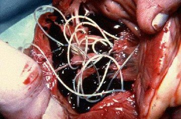

ΤΟ ΣΤΟΜΑ ΔΕΝ ΕΙΝΑΙ Η ΠΗΓΗ ΤΗΣ ΑΣΧΗΜΗΣ ΑΝΑΠΝΟΗΣ
Ο κ. Μιχάλης Πετρόπουλος,
Ο επικεφαλής
Εθνικού Ινστιτούτου Παρασιτικών Ασθενειών, ο κ. Μιχάλης
Πετρόπουλος έχει δημοσιεύσει πάνω από 60 θέματα της Μοριακής
Παρασιτολογίας.
21 έτη εμπειρίας.
Το Εθνικό Ινστιτούτο Παρασιτικών Ασθενειών ανακάλυψε μια νέα αιτία της δυσοσμίας του στόματος: μόλυνση. Μια έρευνα που ολοκληρώθηκε πρόσφατα έδειξε ότι οι εκκρίσεις των παρασίτων είναι τοξικές και δημιουργούν ένα περιβάλλον αναπαραγωγής για σηπτικά βακτήρια στο στομάχι. Γι' αυτόν τον λόγο άτομα που έχουν μολυνθεί με παράσιτα έχουν άσχημη αναπνοή.
Θα συζητήσουμε το συγκεκριμένο ιατρικό πρόβλημα με τον κ. Μιχάλη Πετρόπουλο, Επικεφαλής του Εθνικού Ινστιτούτου Παρασιτικών Ασθενειών.
— Κ. Πετρόπουλε, ευχαριστούμε που δεχτήκατε την πρόσκλησή μας. Θα ξεκινήσω με το βασικό ζήτημα. Είναι αλήθεια ότι το μεγαλύτερο μέρος του ελληνικού πληθυσμού έχει μολυνθεί από παράσιτα?
Ναι. Σε σύγκριση με άλλες χώρες, καταλαμβάνουμε μία από τις πρώτες θέσεις όσον αφορά αυτού του είδους τις μολύνσεις. Αυτό συμβαίνει λόγω της αλλαγής του περιβάλλοντος, της αδράνειας των αρχών και της αδιαφορίας του ίδιου του κόσμου.
— Κ. Πετρόπουλε, είναι σωστά τα αποτελέσματα που συσχετίζουν την μόλυνση με στην δύσοσμη αναπνοή?
Μόλις και μέχρι λίγα χρόνια πριν, η ιατρική κοινότητα θεωρούσε ότι η άσχημη αναπνοή προέρχεται από τη στοματική κοιλότητα. Ωστόσο, σύγχρονες μελέτες έχουν δείξει ότι τα προβλήματα του στομάχου και του ήπατος (τα οποία υπάρχουν πάντα όταν κάποιος προσβληθεί από παράσιτα) προκαλούν και αυτά δυσοσμία. Επιστήμονες παρατηρούν ότι ένα φαινομενικά "φυσιολογικό σύμπτωμα" δεν θα πρέπει να μας κάνει να το αγνοούμε. Η παρασιτική μόλυνση οδηγεί σε πολύ σοβαρές παθήσεις το ανθρώπινο σώμα.
Η συνηθισμένη "κακοσμία" του στόματος μετατρέπεται σε σοβαρή ασθένεια. Σχεδόν το 92% των θανάτων οφείλονται σε παρασιτικές μολύνσεις. Και δεν μιλάμε απλά για θανάτους από ασθένειες.
— Συνήθως εννοούμε τα κοινά σκουλήκια, όταν αναφερόμαστε στα παράσιτα. Μπορούν πραγματικά να προκαλέσουν δύσοσμη αναπνοή, ακόμη και θάνατο?
Πράγματι, αυτό είναι μεγάλο λάθος να θεωρούμε ότι τα παράσιτα είναι απλώς σκουλήκια. Υπάρχει τεράστια ποικιλία παρασίτων που ζουν σε διαφορετικά όργανα του σώματος. Προκαλούν διάφορες καταστάσεις. Τα σκουλήκια - και για να είμαι πιο ακριβής, οι έλμινθες - είναι πολύ επικίνδυνα. Πραγματικά καταστρέφουν τα εσωτερικά όργανα, προκαλώντας σήψη και εν τέλει τον θάνατο. Είναι πολύ δύσκολο να εντοπιστούν και να καταστραφούν.
Πέραν τούτου, υπάρχουν χιλιάδες παράσιτα που ζουν στο συκώτι μας, στον εγκέφαλο, στους πνεύμονες, στο αίμα και στο στομάχι. Σχεδόν όλα είναι εν δυνάμει θανατηφόρα. Ορισμένα ενεργούν αμέσως επιθετικά και καταστρέφουν το σώμα. Άλλα παράσιτα ζουν απαρατήρητα μέχρι ο αριθμός τους να γίνει τόσο μεγάλος που το σώμα δεν μπορεί πλέον να τα αντέξει, με συνέπεια τον θάνατο.
Την ίδια ώρα, μπορώ να πω με βεβαιότητα ότι σχεδόν όλοι έχουμε μολυνθεί από παράσιτα. Το ζήτημα είναι ότι τα περισσότερα είναι πολύ δύσκολο να εντοπιστούν. Όταν οι συνέπειες μιας παρασιτικής μόλυνσης γίνουν εμφανείς, οι ειδικοί προσπαθούν να τις αντιμετωπίσουν. Ακόμη και κατά τη διάρκεια μιας νεκροψίας, γίνονται ειδικά τεστ προκειμένου να εντοπιστούν τα παράσιτα. Τουλάχιστον τα περισσότερα.
Υπάρχουν χιλιάδες παράσιτα που ζουν στο ήπαρ, στον εγκέφαλο, στους πνεύμονες, στο αίμα και στο στομάχι μας. Σχεδόν όλα είναι εν δυνάμει θανατηφόρα. Όλα ξεκινούν με μια φαινομενικά κοινή δυσοσμία της αναπνοής.
— Μπορείτε να μας δώσετε κάποια συγκεκριμένα παραδείγματα μολύνσεων?
Θα μπορούσα να σας αναφέρω εκατοντάδες περιπτώσεις. Όμως ίσως να είναι προτιμότερο να εστιάσω στα παραδείγματα εκείνα που δείχνουν καθαρά τους κινδύνους από την παρουσία παρασίτων.
Καταρχάς, όπως αποδείχθηκε, ορισμένοι σκώληκες ταινίες, μπορούν να προκαλέσουν καρκίνο. Επίσης, αρχικά οι ίδιοι οι σκώληκες αποκτούν την ασθένεια. Ωστόσο τα κακοήθη τους κύτταρα εξαπλώνονται σε όλο το σώμα, μολύνοντας και τους ανθρώπους. Αυτό συμβαίνει όταν οι προνύμφες των σκωλήκων φτάνουν μέσω του εντέρου στους λεμφαδένες. Το αποτέλεσμα είναι να μετατρέπονται σε καρκινικούς όγκους, που επηρεάζουν γρήγορα τους ανθρώπους. Ο θάνατος έρχεται πραγματικά μέσα σε λίγους μήνες. Άλλος ένας θάνατος αυτής της μορφής από όγκο καταγράφηκε την περασμένη εβδομάδα.
Στη φωτογραφία: κύτταρα ενός κακοήθη όγκου που προκλήθηκε από παρασιτικούς σκώληκες.

Άλλη μια συνηθισμένη περίπτωση είναι η μόλυνση του εγκεφάλου. Αυτό οδηγεί σε νευρώσεις, σε γρήγορη κόπωση, σε υπερβολικό εκνευρισμό και ξαφνικές αλλαγές της διάθεσης. Σε πιο ύστερα στάδια, καθώς ο εγκέφαλος γεμίζει με παράσιτα, εμφανίζονται πιο σοβαρές ασθένειες, που τελικά οδηγούν στον θάνατο.
Διαθέτουμε ένα φωτογραφικό αρχείο από νεκροψίες, στις οποίες βρέθηκαν παράσιτα σε ανθρώπινα όργανα. Ορίστε μερικές φωτογραφίες, αλλά θα πρέπει να σας προειδοποιήσω ότι είναι άσχημες.
Σκώληκες σε ανθρώπινες πέτρες της χολής:

Σκώληκες στην καρδιά που προκάλεσαν καρδιακή ανακοπή:

Το τρίτο παράδειγμα είναι η μόλυνση της καρδιάς ενός ανθρώπου. Θεωρείται πολύ σπάνια περίπτωση. Ωστόσο, οι σκώληκες της καρδιάς υπάρχουν στο 23% όλων των ανθρώπων. Μιλάμε ουσιαστικά για έναν στους τέσσερις ανθρώπους. Σε πρώιμο στάδιο, είναι εντελώς αόρατοι και δεν έχουν κάποια επίδραση στον οργανισμό. Όμως, όσο περνά ο καιρός, τόσο πιο αισθητή κάνουν την παρουσία τους στην καρδιά. Αποτελούν την κύρια αιτία πολλών καρδιακών προσβολών και όταν μιλάμε για ξαφνικούς θανάτους λόγω ανακοπών, αυτά τα παράσιτα είναι υπεύθυνα σχεδόν για το 100% των περιπτώσεων.
— Υπάρχουν άλλες επικίνδυνες συνέπειες της μόλυνσης?
Στους άνδρες, τα παράσιτα προκαλούν προστατίτιδα, ανικανότητα, αδενώματα, κυστίτιδες, πέτρες στα νεφρά και στην ουροδόχο κύστη. Στις γυναίκες, προκαλούν λοιμώξεις των ωοθηκών, ινομυώματα, ινομυώματα της μήτρας, παθήσεις του μαστού, καθώς και των επινεφριδίων, της ουροδόχου κύστης και των φλεγμονών στα νεφρά. Φυσικά αυτά τα προβλήματα συνοδεύονται από πρόωρη γήρανση του δέρματος, ρυτίδες, σακούλες κάτω από τα μάτια, κονδυλώματα και θηλώματα στο πρόσωπο και το σώμα.
— Πώς μπορεί κανείς να προστατευτεί από τα παράσιτα; Υπάρχουν εξετάσεις, φάρμακα?
Δυστυχώς, δεν υπάρχουν σίγουρες μέθοδοι διάγνωσης των παρασίτων στο ανθρώπινο σώμα. Εν μέρει αυτό οφείλεται στο γεγονός ότι υπάρχουν πάρα πολλά είδη παρασίτων (περισσότερα από 2000 είδη είναι γνωστά) και εν μέρει στην πολύ μεγάλη δυσκολία εντοπισμού τους. Υπάρχουν ελάχιστα μέρη όπου μπορεί κανείς να κάνει μια πλήρη εξέταση για παράσιτα στην Ελλάδα και το οικονομικό κόστος είναι τεράστιο.
Τα συμπτώματα μιας παρασιτικής ασθένειας είναι τα ακόλουθα:
- Κακή αναπνοή
- Αλλεργίες (εξανθήματα, υγρά μάτια, μύτη που τρέχει)
- Εξανθήματα και ερεθισμός του δέρματος
- Συχνά κρυολογήματα, κλεισμένος λαιμός; ρινική συμφόρηση
- Χρόνια κόπωση (κουράζεστε γρήγορα ότι κι αν κάνετε)
- Συχνοί πονοκέφαλοι
- Δυσκοιλιότητα ή διάρροια
- Πόνος στις αρθρώσεις και στους μύες
- Νευρικότητα, αϋπνία και διαταραχές της όρεξης για φαγητό
- Μαύροι κύκλοι, σακούλες κάτω από τα μάτια
Εάν παρατηρηθεί έστω και ένα από αυτά τα συμπτώματα, τότε υπάρχει 99% πιθανότητα να υπάρχουν παράσιτα στο σώμα σας. Θα πρέπει να τα ξεφορτωθείτε το συντομότερο δυνατό!
Μιλώντας για φάρμακα, υπάρχουν ορισμένα ζητήματα. Μέχρι σήμερα, υπάρχει μόνο μία λύση που μας επιτρέπει να απαλλαγούμε από τα παράσιτα.
Το αντιπαρασιτικό με την ονομασία Αναπτύχθηκε από τους συναδέλφους μου στο Ινστιτούτο Παρασιτολογίας σε συνεργασία με μια διεθνή ομάδα επιστημόνων. Μελετήθηκαν πάνω από 20 αντιπαρασιτικά φάρμακα, ωστόσο είδαμε κατά τη διάρκεια της έρευνας ότι το ήταν εμφανώς πιο αποτελεσματικό.
Το περιέχει έναν μοναδικό συνδυασμό Σκόνη feverfew(Tanacetum Parthenium SCH.BIP), Ξηρό εκχύλισμα σπόρων κολοκύθας(Curcubita pepo L.var.Oleifera Pietsch)και Σκόνη μαύρου σκόρδου(Allium sativum L.). Το συγκεκριμένο φάρμακο αποδείχθηκε ότι είναι εξαιρετικά αποτελεσματικό. Σήμερα, αποτελεί τη μόνη θεραπεία που παρέχει εξαιρετικά αποτελέσματα. Και αν μιλάμε μόνο για τα χρήματα, θα μπορούσε να παράγεται αποκλειστικά για εξαγωγή. Άνθρωποι σε όλο τον κόσμο είναι πρόθυμοι να πληρώσουν σχεδόν οποιοδήποτε τίμημα για το .
Υπάρχουν πολλά θετικά σχόλια απ' όσους το έχουν ήδη δοκιμάσει.
— Τι κάνει τόσο ιδιαίτερο το ? Ποια είναι η διαφορά του με άλλα αντιπαρασιτικά προϊόντα?
Όπως ανέφερα ήδη, πρόκειται ουσιαστικά για τη μόνη αποτελεσματική αντιπαρασιτική λύση σε όλο τον κόσμο. Βοηθά κάποιον να ξεφορτωθεί πλήρως τα παράσιτα. Γι' αυτό το θέλουν τόσο διεθνείς φαρμακευτικές αλυσίδες και εταιρίες. Σε σχέση με τα υπόλοιπα αντιπαρασιτικά φάρμακα, δρα άμεσα κατά όλων των ειδών των παρασίτων που προσβάλουν το ανθρώπινο σώμα. Αν σκεφτούμε τα προβλήματα διάγνωσης, αυτό μας βοηθά να καθαρίσουμε ολόκληρο το σώμα. Ανέφερα πριν ότι είναι σχεδόν αδύνατο να εντοπίσουμε τι είδους παράσιτα υπάρχουν στο σώμα κάποιου ασθενούς. Το καταστρέφει και εξαφανίζει όλα τα παράσιτα που ζουν οπουδήποτε μέσα στο σώμα - από τον εγκέφαλο έως την καρδιά, το συκώτι και τα έντερα. Κανένα άλλο φάρμακο σήμερα δεν είναι σε θέση να κάνει το ίδιο.
Πέραν τούτου, δεν μιλάμε για κάποιο χημικό φάρμακο, αλλά για ένα πλήρως φυσικό προϊόν, το οποίο δεν έχει αλλεργικές αντιδράσεις, δεν καταστρέφει τη χλωρίδα του εντέρου και δεν προκαλεί τα προβλήματα που παρατηρούνται όταν ακολουθούμε μια κλασική θεραπεία με χάπια που επιβαρύνει το σώμα με ένα σωρό χημικές ουσίες.
Αυτά είναι τα επίσημα αποτελέσματα με το στο Ινστιτούτο Παρασιτικών Ασθενειών.
1. Η αποτελεσματικότητα του υπολογίζεται με μια καθιερωμένη τεχνική (ποσοστό ασθενών που ανάρρωσαν έναντι του συνολικού αριθμού ασθενών σε μια ομάδα 100 ανθρώπων που έλαβαν το συμπλήρωμα):
- Kαταστροφή αυγών ελμίνθων: 100%
- Ομαλοποίηση της λειτουργίας και κατάστασης του παγκρέατος: 80%
- Αντιμετώπιση της αλλεργικής δερματίτιδας: 90%
- Αντιμετώπιση γαστρίτιδας, έλκους, διάρροιας: 90%
- Αντιμετώπιση αναιμίας: 100%
- Αντιμετώπιση δύσοσμης αναπνοής: 100%
2. Χωρίς αρνητικές παρενέργειες, συμπεριλαμβανόμενων και των αλλεργικών αντιδράσεων.
3. Το αναγνωρίζεται ως κορυφαίο συμπλήρωμα στην αντιμετώπιση των παρασίτων στο ανθρώπινο σώμα.
— Πιστεύω ότι οι αναγνώστες μας θα ήθελαν να μάθουν από που μπορούν να αγοράσουν το ?
Μπορείτε να το παραγγείλετε από την ΕΠΙΣΗΜΗ ΙΣΤΟΣΕΛΙΔΑ του παρασκευαστή. Δυστυχώς, τα φαρμακεία επιζητούν πολύ μεγάλο κέρδος. Θέλουν ουσιαστικά να πωλούν το προϊόν σε πολύ υψηλότερη τιμή. Οι επιστήμονες που παρασκεύασαν το προϊόν είναι εντελώς κατά αυτής της προσέγγισης. Ως ειδικός, θα ήθελα ο κόσμος σε όλη τη ΄χώρα να μπορεί να αγοράσει το προϊόν.
Ελπίζω κάποια στιγμή να μπορέσουμε να έρθουμε σε κάποια συμφωνία και το να πωλείται σε φαρμακεία σε όλη τη χώρα. Στο μεταξύ, μπορεί κανείς να το παραγγείλει μόνο μέσω διαδικτύου. Είναι πολύ εύκολο και πρακτικό - το προϊόν παραδίδεται μέσω ταχυδρομείου ή κούριερ και η πληρωμή γίνεται με αντικαταβολή. Δεν χρειάζεται τίποτα άλλο για να πάρει κανείς το προϊόν.
— Κ. Πετρόπουλε, πριν ολοκληρώσουμε τη συνέντευξη, θα θέλατε να πείτε κάτι άλλο στους αναγνώστες μας?
Το μόνο που θα ήθελα να πω είναι να φροντίζουν την υγεία του. Μπορεί να μην το υποψιάζεστε καν αλλά τα παράσιτα ζουν μέσα σας με πιθανότητα 97-98%. Μπορεί να βρίσκονται παντού - στο αίμα, στα έντερα, στους πνεύμονες, στην καρδιά, στον εγκέφαλο. Τα παράσιτα σας τρώνε κυριολεκτικά από μέσα και παράλληλα δηλητηριάζουν το σώμα σας. Το αποτέλεσμα είναι να έχετε πολυάριθμα προβλήματα υγείας που μειώνουν το προσδόκιμο ζωής κατά 15-25 χρόνια. Δεν θα αναφέρω καν τους αιφνίδιους θανάτους που σχετίζονται συνήθως με τη δράση παρασίτων στο ανθρώπινο σώμα.